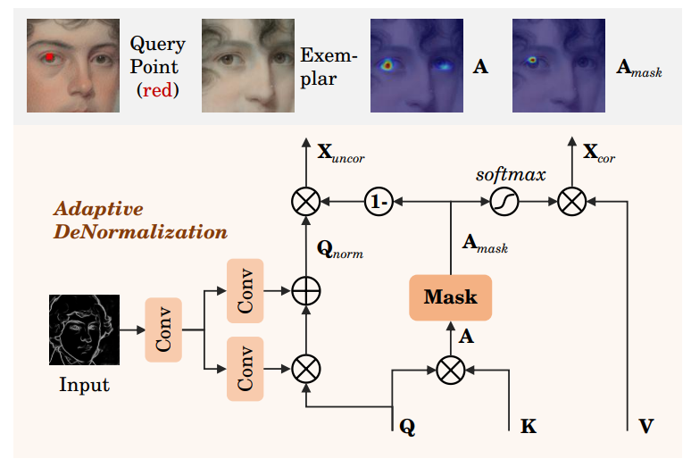

utils
开 缝
Low-Light Image Enhancement via Structure Modeling and Guidance
用结构信息做低光照图像增强的方法，整个网络如下图所示，结构信息是低光照图像估计出来的，需要学习的只有融合结构信息和图像的c部分，Structure-Guided Enhancement。
主要位于decoder部分，为原始图像预测得到的结构信息，可用其增强appearance预测，这种增强可以用两个方面解释，首先，结构信息可以增强图像细节，尤其是对于低信噪比的黑暗区域，其次是边缘信息有助于区分不同的暗区，并建立更好的关系。
假设SGEM的decoder有K层，每层的输入为，bpq分别表示通道数，高，宽。在第j层，我们首先将结构映射调整为与同样的大小，得到，为了利用结构映射的指导，我们提出从生成的spatially-varying kernels和normalization maps。生成可以分别用 SGC（Structure-Guided Convolutions）和SGN（normalization）来完成，如下图所示，SGC在不同位置产生不同的kernels，特征映射可以处理为：
其中*是卷积，K是第j层的synthesized kernels，G是第j层的SGC。SGN可以针对不同的位置预测不同的normalization maps来处理feature maps，如
其中是第j层的归一化参数，·表示hadamard product，，IN是instance normalization，Gnj是第j层的SGN，在第j层，特征增强为：
其中C表示Unet中的普通卷积。
Masked and Adaptive Transformer for Exemplar Based Image Translation
提出一个Masked and Adaptive Transformer的东西来实现精确的跨域对应，在普通的transformer中做一些调整，用masked attention来取代multi-head attention，除此之外，还用Positional Normalization（PONO）来代替LN，Adaptive Convolution来代替MLP-based FFN。能自适应增强上下文的联系。如下图，a为传统transformer，b为MAT。
让和分别表示image域和exemplar域的图像，令，分别表示两向量的中间表示，我们首先分别用1x1的卷积将 map为query ， map为 key 和value ，如下图所示：

Masked Correspondence Learning.
我们在和上加上positional encoding，用于embedding空间相关性。然后使用cosine attention机制得到initial correspondence ，
其中，是position indices，加横线的是Q，K的均值，是和的matching score。
之前的工作里，A本来用于reshuffle exemplar用于控制图像合成中的local patterns，然而，由于跨域学习的困难，A设计不可靠的match scores，因此会导致artifacts。为了克服此，我们根据初始匹配分数的符号来区分是否可靠，masked correspondence为.
DynaST中用两个网络来预测correspondence的reliability mask，然后没有supervision因此困难,relu没有学习的参数因此good.
Reliability-Adaptive Feature Aggregation.
对于中reliable correspondence的区域，我们用来warp从exemplar中导出的value features V，
其中α=100表示控制softmax函数sharpness的缩放系数。对于中的unreliable correspondence，提供了V的平均样式表示，我们进一步从输入导出的query Q中提取补充信息，受SPADE启发，首先通过使用从中学习到的pixel-wise modulation参数（γ是scale，β是bias）将Q转移至目标域。
其中和是Q的均值和标准差。除此之外，我们通过以下方法选择中unreliably corresponded 区域的翻译特征：
求和沿着第二个维度，表示point-wise production传播，γ和β是从中学习得到，因此保留了的语义信息，此外，对生成图像的约束会推动所选特征向的风格传递。理想情况下，和将互相补充，并促进图像生成中的语义一致性和风格相关性。为此，我们整合了二者和Q：
在PONO中，每个位置的特征都是独立归一化的，和传统transformer以及DynaST相比，PONO提高了reliability-adaptive feature aggregation的灵活性。
Context-Aware Feature Augmentation.
灵感来自于ConvNeXT，用AdaConv替换FFN，用position-adaptively来强调信息表示，此外，使用coordinate attention模块来捕获上下文相关性。如图的c所示，首先用深度卷积（Dwise）分别更新每个通道中的表示，然后用两个点卷积（Pwise）层在每个位置自动强调感兴趣的表示，第一个Pwise层后使用GELU和LN。值得注意的是，CoordAtten在wise层之后用于对图像中的远程依赖关系进行建模。特别地，coordatten生成跨通道和position-sensitive的attention maps。这有助于模型更精确定位感兴趣的表示。
最后一个残差连接后得到一个MAT块的输出，即
在实现中，默认堆叠三个MAT，逐步完善correspondence并增强信息表示。好处如d上方所示，query point位于左眼，在MAT的第三层显示在样本上对应的大小，mask之后更精确。局部和全局的控制，并重用输入图像的语义特征。
Contrastive Style Learning (CSL)
用编码器提取local style信息，然后用MLP提取global style code z，分别执行局部和全局的样式控制，为了提高风格表征的判别能力，以及生成质量，我们提出对比学习的方法（CSL）方法，如下图所示：
在设置中，exemplar被认为是高质量的，早期训练生成的质量通常较低，受对比学习思想启发，使用exemplar 作为正样本，早期生成的图像作为负样本。让z表示生成图像的style code。CSL通过最大化anchors和正样本间的互信息，最小化anchors和负样本间的互信息来学习风格表征，对比风格损失：
其中，实现中，我们使用队列来缓存negative style vectors。
Translation network
为了提高语义一致性和风格准确性，使用源语义特征和全局风格代码z来解码图像，按照U-Net设计网络。skip连接补充输入图像的信息语义结构，此外，采用AdaIN的方式，用样式code z来全局控制生成图像的style。特别地，z通过全连接FC map到channel-wise的modulating factors，这样减少了corresponddence学习对图像生成的影响，并为unmatched regions提供可靠的style control。
一些实用的Utils
图像转视频：
1 | import fnmatch |
Masked and Adaptive Transformer for Exemplar Based Image Translation
Low-Light Image Enhancement via Structure Modeling and Guidance